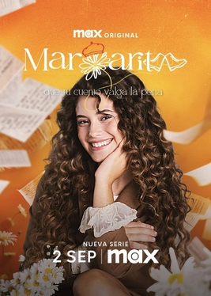

Noticias
BIOGRAFÍA Cris Morena (1956, Buenos Aires, Argentina) es una productora, guionista, directora y compositora argentina. Reconocida por crear exitosas series juveniles y musicales como Chiquititas, Rebelde Way, Floricienta y Alma Pirata. Su estilo combina comedia, romance y música, convirtiéndose en un ícono de la televisión infantil y adolescente en Latinoamérica. Además, ha trabajado en teatro, cine y lanzó varios discos con canciones de sus producciones. Su legado influyó en generaciones de artistas y fanáticos en toda la región.
Curiosities
Detrás de cámaras, las series de Cris Morena están plagadas de anécdotas. En Chiquititas, algunos actores eran tan chiquitos que a veces tenían que usar pañales porque las jornadas empezaban muy temprano. Los fans confundían a los actores con sus personajes, y hasta hoy muchos no recuerdan sus nombres reales. En Rebelde Way, los integrantes de Erreway tuvieron que aprender a tocar instrumentos casi en tiempo récord, y muchas escenas se repetían por errores de notas. Cris Morena es conocida por su obsesión con los detalles: en Casi Ángeles grababan algunas escenas con varias cámaras a la vez para no perder ni un gesto, y los disfraces de fantasía eran tan complicados que a veces los actores se enganchaban con el set, ¡y esas caídas quedaban en la versión final! Durante las giras y conciertos, los fans se colaban en los ensayos, haciendo que los actores tuvieran que “escaparse” por pasillos secretos. Incluso en escenas donde los chicos tenían que comer platos enormes, muchas veces no podían terminarlos, pero tenían que fingir que sí. Cris Morena no solo creó series, sino un universo lleno de música, risas y anécdotas inolvidables.
Cosas Nuevas
Te quiero y me duele es la nueva serie de Cris Morena filmada en México y estrenada en HBO Max. La historia explora las emociones, los desafíos personales y los romances de jóvenes adultos, manteniendo el estilo característico de Cris Morena con escenas llenas de drama, música y mensajes positivos sobre la amistad y el amor. La serie combina momentos divertidos con situaciones emotivas, buscando conectar tanto con fans antiguos como con nuevas audiencias.
Margarita es el spin-off de Floricienta que sigue la vida de la hija de los personajes originales, Margarita. La serie mezcla comedia, romance y música, con canciones nuevas y reversiones de clásicos. Su historia aborda temas de identidad, amistad y superación, y ya confirmó una segunda temporada con funciones en vivo, consolidándose como una de las producciones más esperadas de Cris Morena en los últimos años.